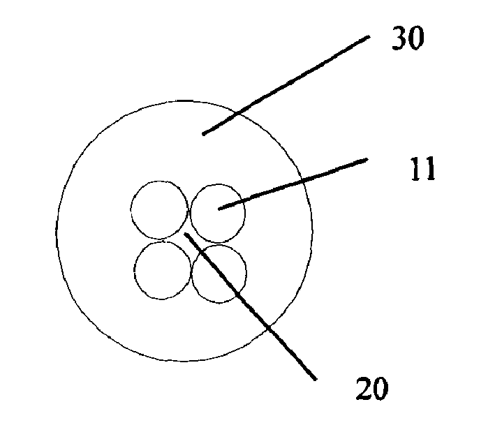

发明名称--多形标志点
| 申请号 | CN200420045848.8 | 申请日 | 2004.05.18 | ||
| 公开（公告）号 | CN2726548Y | 公开（公告）日 | 2005.09.21 | ||
| IPC分类号 | A61B19/00 | 申请（专利权）人 | 深圳安科高技术股份有限公司; | ||
| 发明人 | 李彦文; | 优先权号 |
摘要:
一种多形标志点，用于手术导航系统的空间配准，其包括一标定体，一配准体，一用于将所述标志点固定在人体表面的粘贴装置，所述标定体由显影材料构成；所述配准体由所述标定体围起的不显影的中心孔构成；所述标定体设置成具有标识性功能的不同形状体。使各标志点形态各异、相互之间易于区分辨认，并且显影图像与实物容易一一对应，定位配准方便，不会发生错误标定，节省了术前配准时间，具有很高的实用价值。
摘要附图:
